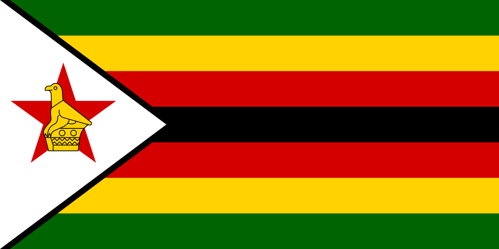

About me

My name is Wadzanai Murombedzi originally from Zimbabwe and I am happy to introduce myself. I am currently studying my degree in Software Development for I have been passionate about technology and the challenge which is what led me to this field of study. Originally I am from a small town in Manicaland Province, in Zimbabwe where I used to spend most of my childhood exploring the rivers and forests.
Harare Zimbabwe
Zimbabwe, a landlocked country of Southern Africa. It is a developing country, which shares a 125-mile (200-kilometer) border on the south with the Republic of South Africa and is bounded on the southwest and west of Botswana, on the north by Zambia and on the northeast and east by Mozambique. The capital city is Harare (formerly called Salisbury)